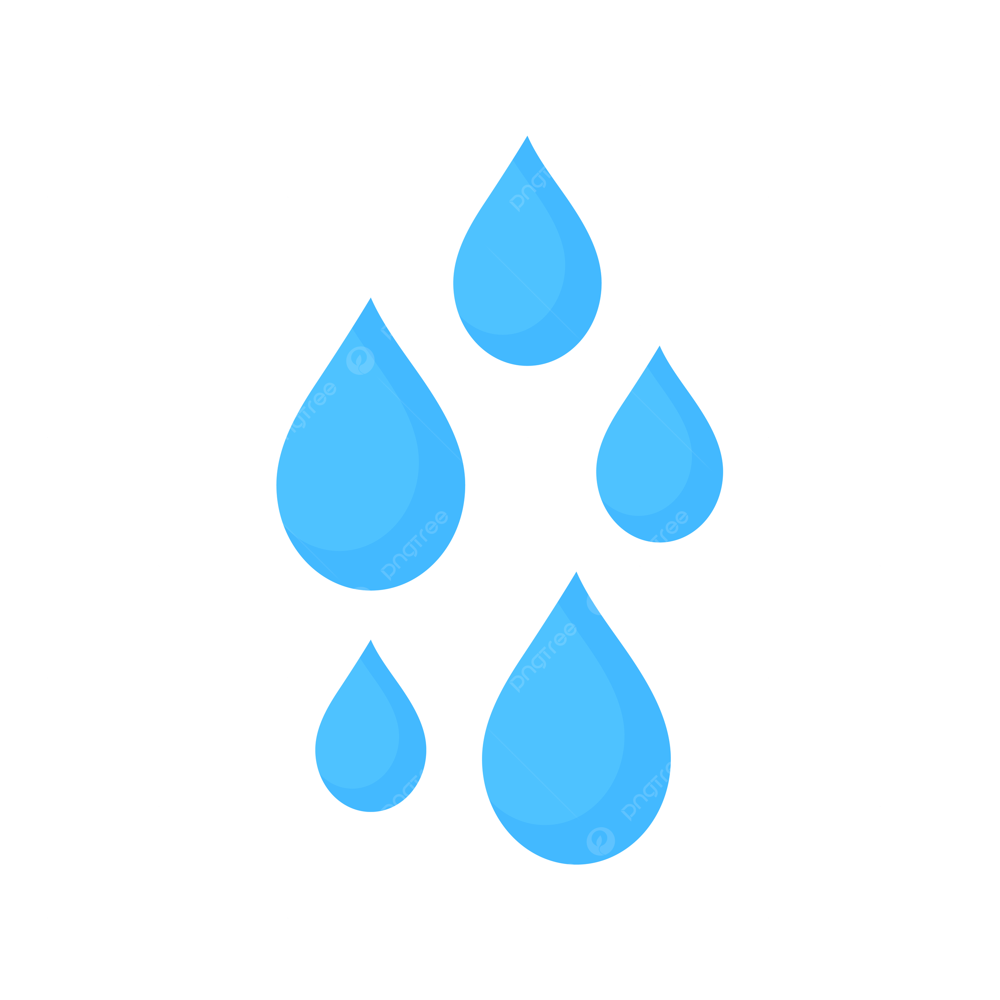
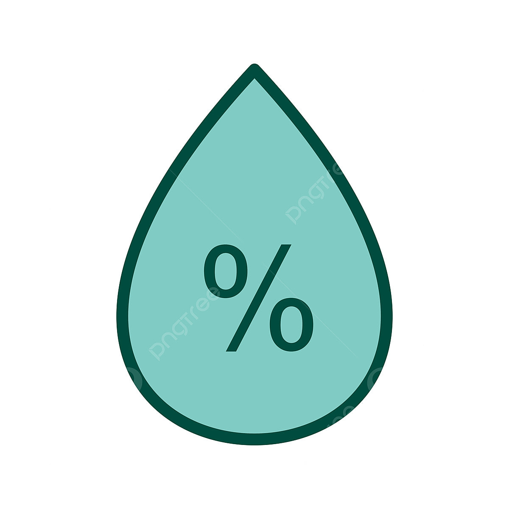
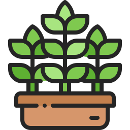

Perawatan Anggrek

Gunakan cahaya terang tidak langsung seperti sinar matahari pagi.

Siram saat media mulai mengering, jangan terlalu basah agar akar tidak busuk.

Suhu ideal 18–32°C. Hindari suhu ekstrem yang terlalu dingin atau panas.

Jaga kelembapan 60–80%, terutama di musim panas atau ruangan ber-AC.

Gunakan media poros seperti arang, sabut kelapa, atau pakis untuk aliran udara baik.